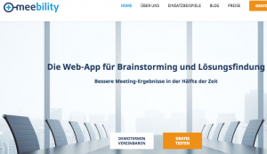
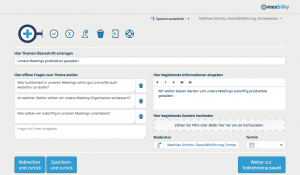
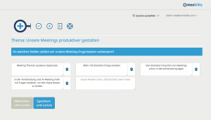
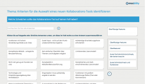
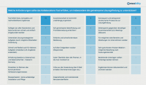
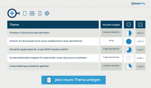

Brainstorming online

Der Schwerpunkt des letzten Beitrages war das Thema Meetingzeit reduzieren und ich hatte bereits angekündigt, dass Matthias Schmitz von meebility uns die App meebility vorstellen wird, mit deren Hilfe man z.B. den zeitaufwendigen Brainstormingteil eines Meetings in die Vorbereitung verlagern kann und damit für eine deutliche Reduzierung der Meetingzeit zu sorgen. Bevor Matthias uns die ersten Schritte erklärt habe ich noch ein paar Fragen:Andrea Kaden: Wie bist Du auf die Idee zu meebility gekommen?
Matthias Schmitz von meebility
Matthias Schmitz: Vor der Gründung war ich für Vertrieb, Marketing, Produktentwicklung und für den Strategieprozess in einem mittelständischen Unternehmen verantwortlich. Ohne das Know-how aus meinen Teams und aus anderen Bereichen wären wir dabei nicht weit gekommen. Um aber Innovationen zu entwickeln und Input für die Strategie zusammenzuführen waren viele Meetings und Workshops nötig.
Der Aufwand für das Zusammentragen guter Ideen und wichtiger Informationen hat mich immer gestört. Das Problem kennen viele: Oft haben wir ganze Workshop-Tage gebraucht um am Ende ein paar Fotos von Metaplanwänden mit Post-its als Ergebnis zu bekommen. Die Zeit hätte ich lieber in die Umsetzung guter Ideen investiert.
Deswegen habe ich nach einer Software gesucht, mit der sich Brainstorming und Lösungsfindung elegant online organisieren lassen. Sicher gab es schon einige Tools, aber so schlank und einfach, wie ich mir das vorgestellt habe, war keines davon.
Andrea: Wie sind die bisherigen Erfahrungen mit meebility?
Matthias: Fast noch besser als wir es zu Beginn erwartet haben. Aus allen bisherigen Einsätzen haben wir die Rückmeldung erhalten, dass sich mit meebility jede Menge Zeit sparen lässt. Unser eigene Hochrechnung von 50% Zeitersparnis wird meistens sogar übertroffen.
Außerdem werden wir immer wieder darin bestätigt, dass sich mit meebility gezielter auf gute Ergebnisse hinarbeiten lässt. Meetings und Workshops, die mit meebility vorbereitet werden, laufen entspannter ab. Schließlich konnte jeder vorher schon seine Meinung einbringen.
Andrea: Gibt es auch Hindernisse?
Matthias: Ja. Obwohl meebility extrem einfach zu bedienen ist, muss man sich ein bisschen damit auseinandersetzen, die richtigen Brainstorming-Fragen zu stellen. Dazu nehmen sich viele im Stress des Tagesgeschäftes oft nicht die Zeit. Es wird dann doch schnell wieder ein normales Meeting abgehalten.
Wir sind selber so begeistert von den Riesenvorteilen, dass wir unterschätzt haben, wie schwer es in vielen Organisationen fällt, ausgetretene Pfade zu verlassen. Trotz eines großen Interesses an meebiltiy sind viele noch zurückhaltend, es wirklich einmal einzusetzen. Aus unserer Erfahrung steckt dahinter ein Mix aus “Keine Zeit, um Zeit zu sparen” und der Sorge, mit dem Beschreiten neuer Wege ein Risiko einzugehen.
Andrea: Was plant Ihr als nächstes?
Matthias: Natürlich ist uns daran gelegen, möglichst viele der Hindernisse beiseite zu räumen. Deswegen arbeiten wir permanent an einer noch intuitiveren Benutzerführung. Feedback aus Kundenprojekten und Produktdemonstrationen hilft uns dabei sehr. Insgesamt möchten wir noch mehr Hilfestellungen für die Moderatoren und die Teilnehmer bieten. Als nächstes wird es z.B. Templates zu Themen wie SWOT-Analyse oder Value Proposition Design geben. Als Moderator einer meeblity Session braucht man sich dann nur noch ein vorgefertigtes Fragen-Set auszusuchen und für die eigene Situation anzupassen.
Erste Schritte in meebility
Im ersten Schritt legen Sie als Moderator des Meetings das Meeting Thema an. Sie formulieren die zu beantwortenden Fragen und laden die Teilnehmer direkt aus dem Tool heraus zu Ihrem Online-Brainstorming ein.

Die Teilnehmer können dann unabhängig von Termin und Ort die Brainstorming Fragen beantworten. Dafür benötigen sie keine Vorbereitung. In der E-Mail mit der Einladung zum Brainstorming erhalten die Teilnehmer einen individualisierten Zugangslink, der sie unmittelbar zur Beantwortung der Fragen führt.

Der Moderator kann sich einen schnellen Überblick über die Antworten aller Teilnehmer verschaffen. Mit einer smarten Suchfunktion lassen sich Mehrfachantworten und Überschneidungen schnell identifizieren. Die Antworten können so geclustert werden, dass es am Ende keine Dopplungen mehr gibt.

Nachdem die Mehrfachantworten durch den Moderator zusammengeführt wurden, können alle Teilnehmer (oder auch ein veränderter Teilnehmerkreis) die aus dem Brainstorming entstandenen Antworten bewerten. Nach der Bewertung kann man sich die Antworten übersichtlich gerankt nach den zusammengeführten Bewertungen der Teilnehmer anschauen.

Besonders schön ist, dass Sie in meebility ganz spontan und einfach über deren E-Mail Adresse Teilnehmer zu einem Online-Brainstorming einladen können (wie z.B. bei der Terminfindung über Doodle). Sie können aber auch ein Team zusammenstellen, dass immer wieder über Online-Brainstomings in meebility zusammenarbeitet. Die Team-Mitglieder können sich anhand des Startbildschirms schnell einen Überblick verschaffen, welche Aktionen als nächstes anstehen und wie weit die laufenden Themen fortgeschritten sind.

Vorteile:
- Mit meebility lässt sich der Zeitbedarf für viele Meetings massiv reduzieren. Zeiteinsparungen von mehr als 50% sind absolut realistisch.
- Sie können zu wichtigen Themen zunächst unabhängig von Termin und Ort zusammenarbeiten. Das Team kann Fragen gemeinsam beantworten, auch wenn sich kein gemeinsamer Termin finden lässt.
- Die kostbare Meetingzeit können Sie nutzen, um auf Basis der Ergebnisse des Online-Brainstormings über die Umsetzung von Lösungsansätzen zu sprechen.
- Auch die Bearbeitung komplexer Aufgaben (z.B. im Strategieprozess) kann durch meebility insgesamt beschleunigt werden.
- Die Ergebnisse werden besser, weil die Teilnehmer unbeeinflusst voneinander ihren kreativen Input einbringen können.
- Die Nachteile von Brainstormings in Präsenz-Meetings werden mit meebility ausgeschaltet.
- Das Protokoll ist schon inklusive.
- meebility ist einfach zu bedienen und macht Spaß
Nachteile:
Auch wenn ich cloudbasierte Tools im Allgemeinen liebe, muss man doch wissen, dass man für die Arbeit mit diesen Tools, z.B. auch Airtable, ein gutes stabiles Internet benötigen. Wer viel Zeit im Zug oder Flieger verbringt oder in abgelegenen Gegenden (ja, internetmäßig gibt es davon auch in Deutschland noch einige) unterwegs ist, sollte dies bei der Auswahl der Tools berücksichtigen. Für mich ein nur ein kleiner Nachteil, den ich auch bei diesem Tool verschmerzen kann.
Beachten sollten Sie: Wenn Sie meebility einführen und mit Leben füllen vergessen Sie nicht, die geplante Zeit für Meetings auch tatsächlich zu reduzieren. Es bringt wenig, ein neues Tool einzuführen, ohne die bisherigen Arbeitsweisen konsequent umzustellen.
Fazit:
Meebility kann in Unternehmen auf einfache und höchst profesionelle Weise unterstützen, die Meetingvorberetiung effizienter zu gestalten und Meetingzeit zu reduzieren. Insbesondere das mittlere und obere Management in Unternehmen sollte einen Blick auf dieses Tool werfen. Ich bin überzeugt, dass es in Zusammenarbeit mit den Assistentinnen nicht nur die Meetingzeit verkürzen kann, sondern auch für Klarheit sorgt. Außerdem ist die Nutzung dieses Tools ein weiterer Schritt zur Digitalisierung Ihrer Administration.
Weitere Artikel

Regeln für KI im Office
ChatGPT & Co haben sich schnell in die Herzen und Alltag von vielen Menschen im Berufs- und Privatleben gespielt. Diese neuen Werkzeuge eröffnen uns viele Chancen, nicht nur effizienter zu werden, sondern auch kreativer. Aber …

KI als Copilot für die Assistenz
KI in Form von ChatGPT & Co sind hervorragende neue Werkzeuge im Office-Alltag, um produktiver und ja, auch kreativer, zu werden. Neugier statt Angst ist angezeigt im Umgang mit diesen Werkzeugen, die wie andere Werkzeuge auch …